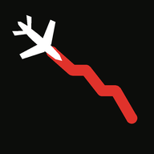

Cold Temp CorrectionsJazz CRJ900 cold-temperature altimeter corrections from the QRH table, and whether to put them on the FMS LEGS page.
Aircraft FMS
Tell them apart by fin number (701–716 = FMS 99, 717–730 = CRJ900 NG with FMS 4.2) or on the FMS STATUS page: NAV DATA J4 AMERICA = FMS 99, J8-AMERICA = FMS 4.2. (AOM Vol II 1.1.2, 4.5.2 4), 10.2.1)
Approach / procedure type
Airport and conditions
The altimeter source is taken as the aerodrome elevation (COM 4.7.6). Tap ± to make a temperature negative (the iPhone number pad has no minus key).
Baro-VNAV TLIM from the plate
Published altitudes
Between table values
The QRH doesn't say how to read between table values, so pick a method. Either way the result is rounded up to the next 10 ft.
Airport temp °C vs height above altimeter source. Values are added to published minimum IFR altitudes, already rounded up to the next 10 ft. Shaded = not published. Source: CRJ900 QRH OPERATIONS-1, Rev 19, 15 May 2025. Above 5,000 ft or colder than −50°C the page uses the ICAO PANS-OPS (Doc 8168) formula, labelled, because the Jazz manuals give no method there.